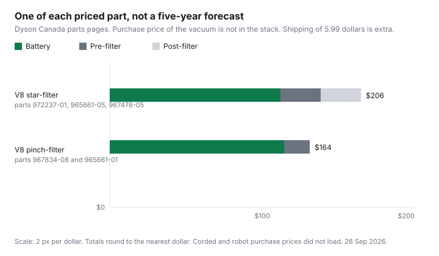

Household Items and Supplies · Canada
Buying a Vacuum in Canada: Cordless vs Corded vs Robot—Total Cost Including Batteries and Filters
A cordless vacuum's sticker is the first cheque. The battery and the filters are the later ones, and only if those parts actually fail or you choose to replace them. This page prices one maker's parts, Dyson Canada's V8 pages, as examples. It does not rank Dyson against anyone else. Corded vacuums, robot vacuums, and the V8 machines themselves did not return a purchase price on 26 Sep 2026, so the five-year total is a blank plus a parts stack, not a forecast that a battery dies in year three.
Whether a repair beats a replacement is the repair-or-replace worksheet. A store plan on top of the legal warranty is the extended-warranty guide. Getting the difference back if the same store drops the price is the price-adjustment guide. When to look, as a calendar rather than a percent, is the Black Friday and Boxing Day guide.
Disclosure: Vacuums and replacement batteries sold through Amazon.ca storefronts are an offer type. Saving Optimizer may earn a commission if we later add a partner link. We do not currently claim an Amazon partnership. Education only. No brand ranking.
Key takeaways
- No corded, cordless, or robot purchase price loaded on 26 Sep 2026. Upfront ranges are omitted.
- Dyson Canada, 26 Sep 2026: V8 star-filter battery part 972237-01 was $139.99 and out of stock. Pinch-filter battery part 967834-08 was $142.99 and out of stock. Those pages charge $5.99 to ship accessories and spare parts.
- On the star-filter support page, pre-filter 965661-05 and post-filter 967478-05 were $32.99 each. The standalone page for 965661-05 showed $29.99 the same day. One of each at the support-page prices is $205.97.
- Pinch pre-filter 965661-01 was $20.99 on the pinch spare-parts page and $29.99 on its standalone page. Battery plus the $20.99 filter is $163.98. This is a shopping list, not a five-year failure.
- Costco's return FAQ, version 4.0, published 10 Oct 2025, guarantees satisfaction with listed exceptions. The 90-day electronics list does not name vacuums. Returns are case by case.
Upfront price ranges in Canada by type
A range needs at least two dated tags for that type. Corded, cordless stick, and robot listings did not load a selling price on 26 Sep 2026, at Costco, Canadian Tire, or Best Buy. This guide will not print a "from $199" band from memory. The upfront cell in the table below is blank for all three types. When you shop, write the model number, the price, whether tax is in, and the date. A cordless stick and a robot are different products. A doorbuster with a different model number is a third product. The sale guide's rule applies here: match the model, not the photo.
Dyson is named below only because its Canadian parts pages returned prices. That is not a finding that a Dyson vacuum is the one to buy, and it is not a finding about what the vacuum itself costs. The machine price and the parts price are separate lines. Add them only after both are on your receipt, or on a page you opened.
Hidden costs: batteries, filters, brush rolls, and parts availability
Dyson Canada's battery page for part 972237-01, the replacement for a V8 with a star filter, showed $139.99 on 26 Sep 2026 and said the part was out of stock. The page says shipping for accessories and spare parts is $5.99, with orders shipped in 2 to 7 business days by Canada Post, and it prints a 1-year warranty on tools and parts. Part 967834-08, the battery for a V8 with a pinch pre-filter and an E battery, was $142.99, also out of stock, with the same $5.99 shipping line and the same 1-year parts warranty wording. A separate Dyson Canada page says the V8 range uses three batteries and tells you to match the serial number on the battery before you buy. The retrieved text did not keep each serial prefix under its own heading, so this guide does not assign prefixes. Read them on the page.
Filters split by which machine you have, and the same part number did not show one price on every Dyson page opened the same day. On the V8 star-filter support page, pre-filter part 965661-05 was $32.99 and post-filter part 967478-05 was $32.99. The standalone product page for 965661-05 showed $29.99 and said it was in stock. On the pinch-filter spare-parts page, pre-filter 965661-01 was $20.99. The standalone page for 965661-01 showed $29.99. The chart uses the model spare-parts prices, $32.99 and $20.99, and the table shows the conflict so you do not treat one tag as the only tag. The standalone filter page also says shipping is $5.99 on orders under $50 and free at $50 and over. That is a second shipping rule, not the flat $5.99 on the battery page. A brush-bar price was started on the pinch spare-parts page and was not captured as a complete dollar figure, so brush rolls are not in the total.
Dyson's filter pages say to clean the filter about once a month so the machine keeps suction. That sentence is a wash, with cold water, not an instruction to buy a new filter every month. A filter you can wash is not a $32.99 event until it no longer seals or no longer comes clean. Out of stock on the battery page is an availability fact for that day. It is not a reason to buy a different brand, and it is not a reason to assume every cordless battery is unavailable.
Lifetime cost table over 5 years
Five years is the column people want. It is not a column this draft can sum. A lifetime total is the purchase, plus the parts you actually replace, plus shipping when it applies. No failure rate was opened, so the table does not multiply the battery by a guessed number of replacements. "One of each" means the cost if you buy the battery and the filters once. It is not a prediction that you will.
| Type | Upfront price | Parts if you buy one of each | What was on the parts page |
|---|---|---|---|
| Corded | Not loaded | Not loaded. No battery line. | No corded parts page opened. |
| Cordless stick, Dyson V8 star-filter example | Not loaded | $139.99 battery (972237-01) + $32.99 pre-filter (965661-05) + $32.99 post-filter (967478-05) = $205.97, using the star-filter support prices. | Battery out of stock. 1-year warranty on tools and parts. Shipping $5.99 on the battery page. Standalone pre-filter page showed $29.99, which would make the same trio $202.97. |
| Cordless stick, Dyson V8 pinch-filter example | Not loaded | $142.99 battery (967834-08) + $20.99 pre-filter (965661-01) = $163.98, using the pinch spare-parts page. | Battery out of stock. Same 1-year parts warranty wording and $5.99 shipping on the battery page. Standalone pre-filter page showed $29.99, which would make the pair $172.98. |
| Robot | Not loaded | Not loaded | No robot battery or filter price opened. |

Warranty and repairability questions to ask before buying
The parts pages above warrant the part for one year. They do not state how long the vacuum itself is warranted, because the vacuum's product page did not load. Ask the seller, in this order: how long is the manufacturer's warranty on the machine, does it include the battery, who you call in Canada, and whether a washed filter is required before a suction claim. Quebec's legal warranty of good working order, and the fact that a vacuum is not in the appliance duration table on the page this site cites, belongs on the repair worksheet rather than as a year-count repeated here.
Costco's return-policy FAQ, version 4.0, published 10 Oct 2025, says the merchandise guarantee is satisfaction, with exceptions. Electronics may be returned within 90 days for a named list: televisions, major appliances (countertop microwaves excluded), projectors, computers, cameras, drones, camcorders, digital music players, tablets, smart watches, cellular phones, and other electronic products Costco identifies from time to time. Vacuums are not in that sentence. A separate line says products with a limited useful life, such as tires and batteries, may be sold with a product-specific limited warranty. Another answer says all returns are reviewed case by case and some are authorized or refused at a manager's discretion. Packaging is not required for a warehouse return. A Costco.ca order can go back to a warehouse if you bring the order number. None of that is a promise that a vacuum comes back in five years. A store plan you add at the till is the extended-warranty guide, including the instruction to read your card certificate rather than assume purchase protection.
When to buy: Black Friday, Boxing Day, and Costco instant savings
Black Friday 2026 is Friday 27 November. Boxing Day is 26 December. Those are calendar dates, the same ones the sale guide uses, and they are not a percent off a vacuum. Write the model and today's price. Compare that pair on those dates, and ignore a photo of a different model. Costco instant savings are real when the warehouse price tag says the saving and the end date. No vacuum instant-saving amount loaded on 26 Sep 2026, so none is printed. The return FAQ above is the after-purchase half: know which list your machine is on before you rely on a 90-day window it may not be in.
Best Buy's low-price-guarantee URL returned Access Denied when this draft requested it on 26 Sep 2026. Day counts from that policy are not restated here. Use the price-adjustment guide, which is where that retailer's text was handled, and re-open the live page before you file a claim.
Refurbished and open-box vacuums in Canada—safe or not
Safe is a warranty and a return window, not a vibe. This draft did not open a Best Buy refurbished-vacuum policy or a Costco open-box vacuum policy. It does not call either channel safe or unsafe. The questions to ask on the listing are: who warrants the machine, for how many months, is the battery included and warranted, can you return it to a Canadian counter, and is the model number the same one whose parts you priced. A lower tag with no parts page is a machine you may not be able to feed.
Open-box is not the same word as refurbished. One may mean a return that was checked. The other may mean a unit that was repaired. If the listing does not say which, ask before you pay. A marketplace seller with no Canadian return address is a different risk again, and Amazon.ca storefronts stay under the disclosure rather than as a ranked outlet. Match the part numbers in the table to the machine's filter type before you treat $139.99 as your battery.
Sources & date stamps
- Dyson Canada, part 972237-01, opened 26 Sep 2026: V8 star-filter battery $139.99, out of stock. Shipping for accessories and spare parts $5.99. 1-year warranty on tools and parts. Ships in 2 to 7 business days by Canada Post.
- Dyson Canada, part 967834-08, opened 26 Sep 2026: V8 battery $142.99, out of stock. Same $5.99 shipping line and 1-year parts warranty wording.
- Dyson Canada V8 star-filter support page, opened 26 Sep 2026: pre-filter 965661-05 at $32.99, post-filter 967478-05 at $32.99. Standalone page for 965661-05 showed $29.99 the same day. Post-filter standalone page also showed $32.99.
- Dyson Canada pinch-filter spare-parts page, opened 26 Sep 2026: pre-filter 965661-01 at $20.99. Standalone page for 965661-01 showed $29.99, and its shipping line is $5.99 under $50 and free at $50 and over.
- Dyson Canada V8 replacement-battery page, opened 26 Sep 2026: three batteries in the range; match the serial number. Each part or tool guaranteed for 12 months. Filter pages suggest cleaning about once a month. That is a wash, not a new filter.
- Costco return-policy FAQ, version 4.0, published 10 Oct 2025, opened 26 Sep 2026: satisfaction guarantee with listed exceptions. 90-day electronics list does not name vacuums. Case-by-case returns. Packaging not required at the warehouse. Costco.ca orders can return to a warehouse with the order number.
Frequently asked questions
Is a cordless vacuum more expensive to own?
It can be, once a battery is in the total, and this draft cannot finish the sum. No corded, cordless, or robot purchase price loaded on 26 Sep 2026. A Dyson Canada V8 star-filter battery, part 972237-01, was $139.99 that day, and the filters beside it were $32.99 each. That is a parts example, not a ranking, and it is not a prediction the battery will fail.
How much does a replacement vacuum battery cost?
On Dyson Canada's page for part 972237-01, checked 26 Sep 2026, the V8 star-filter battery was $139.99 and out of stock. Part 967834-08, the pinch-filter and E-battery pack, was $142.99 and also out of stock. Shipping on those pages is $5.99. A corded vacuum has no battery line. Other brands' batteries did not load.
Are robot vacuums worth it?
Worth it is a five-year sum this draft cannot print, because no robot purchase price, filter price, or battery price loaded. A robot that you still follow with a stick has two machines, not a saving. Ask for the parts page and the warranty length before you compare a robot with a corded vacuum whose price you have actually seen.
When do vacuums go on sale in Canada?
Use the calendar, then the model number. Black Friday 2026 is Friday 27 November and Boxing Day is 26 December. Those dates are not a discount. Costco's return FAQ, published 10 Oct 2025, is a satisfaction guarantee with exceptions, and the 90-day electronics list does not name vacuums. The Black Friday guide is where sale windows for small appliances are dated.
Is a refurbished vacuum safe to buy?
This draft did not open a Best Buy or Costco refurbished or open-box vacuum policy, so it does not call refurbished safe or unsafe. Ask who warrants the machine, for how long, whether a battery is included, and what the return window is on that listing. A lower tag with no parts supply is not a saving. Best Buy's low-price-guarantee page returned Access Denied on 26 Sep 2026, so its day counts are not restated here.